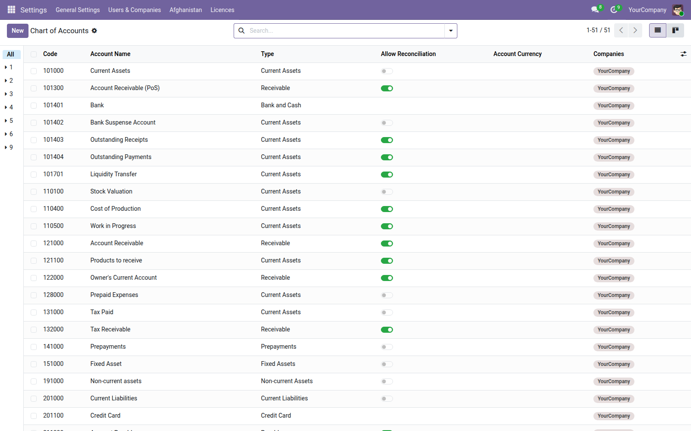

<section style="padding:32px 0;font-family:Roboto,Helvetica,Arial,sans-serif;color:#2b3a34;">
  <div style="max-width:900px;margin:0 auto;padding:0 24px;">

    <p style="font-size:12px;letter-spacing:.14em;text-transform:uppercase;color:#0b6b57;font-weight:600;margin:0 0 10px;">Accounting · Localization</p>
    <h1 style="font-size:40px;line-height:1.1;margin:0 0 14px;font-weight:700;">Afghanistan — Accounting</h1>
    <p style="font-size:19px;line-height:1.55;color:#4c5a55;max-width:640px;margin:0 0 28px;">A chart of accounts and the tax structure for Afghan businesses and NGOs. Odoo ships 225 fiscal localizations in its two editions. Afghanistan is not one of them.</p>

    <div style="background:#f6f7f5;border-left:3px solid #0b6b57;padding:18px 22px;margin:0 0 32px;font-size:16px;line-height:1.6;"><strong>Read this before you file anything.</strong> Afghan tax rates and thresholds change, and enforcement has varied. The rates here reflect the long-standing Business Receipts Tax and withholding regime, but confirm them against current Afghanistan Revenue Department guidance before filing. They are ordinary Odoo taxes and can be edited.</div>

    <div style="margin:0 0 34px;">
      
      <div style="font-size:13px;color:#75837d;padding-top:8px;">The Afghan chart of accounts, applied to a company</div>
    </div>

    <h2 style="font-size:24px;margin:0 0 16px;font-weight:600;">The chart</h2>
    <ul style="font-size:16px;line-height:1.7;color:#4c5a55;margin:0 0 30px;padding-left:20px;">
      <li><strong>Structured for Afghan practice</strong> — businesses and NGOs, rather than a generic chart relabelled</li>
      <li><strong>Dual AFN and USD cash and bank accounts</strong> — because almost every organisation operating there runs both</li>
      <li><strong>Staff advances</strong> — as a real account, since they are a standing feature of Afghan payroll</li>
      <li><strong>Fixed-asset and accumulated-depreciation pairs</strong> — already matched to the Fixed Assets module</li>
    </ul>

    <h2 style="font-size:24px;margin:0 0 16px;font-weight:600;">Taxes</h2>
    <table style="width:100%;border-collapse:collapse;margin:0 0 30px;font-size:15px;">
      <thead><tr style="background:#edf0ec;">
        <th style="text-align:left;padding:10px 14px;border-bottom:1px solid #dce1db;">Tax</th>
        <th style="text-align:left;padding:10px 14px;border-bottom:1px solid #dce1db;">Rates</th>
        <th style="text-align:left;padding:10px 14px;border-bottom:1px solid #dce1db;">Notes</th>
      </tr></thead>
      <tbody>
        <tr><td style="padding:9px 14px;border-bottom:1px solid #eef1ed;">Business Receipts Tax</td><td style="padding:9px 14px;border-bottom:1px solid #eef1ed;">2%, 4%, 10%</td><td style="padding:9px 14px;border-bottom:1px solid #eef1ed;">the rate depends on the activity</td></tr>
        <tr><td style="padding:9px 14px;border-bottom:1px solid #eef1ed;">Withholding — contractors</td><td style="padding:9px 14px;border-bottom:1px solid #eef1ed;">2% licensed, 7% unlicensed</td><td style="padding:9px 14px;border-bottom:1px solid #eef1ed;">separate liability accounts</td></tr>
        <tr><td style="padding:9px 14px;border-bottom:1px solid #eef1ed;">Withholding — rent</td><td style="padding:9px 14px;border-bottom:1px solid #eef1ed;">10%, 15%</td><td style="padding:9px 14px;border-bottom:1px solid #eef1ed;">separate liability accounts</td></tr>
      </tbody>
    </table>

    <h2 style="font-size:24px;margin:0 0 16px;font-weight:600;">Why the withholding accounts are separate</h2>
    <p style="font-size:16px;line-height:1.65;color:#4c5a55;margin:0 0 14px;">Contractor and rent withholding are filed separately, so they post to separate liability accounts. Pooling them into one payable makes the return a reconciliation exercise every month instead of a figure you can read off the trial balance.</p>
    <p style="font-size:16px;line-height:1.65;color:#4c5a55;margin:0 0 30px;">There is no chart of accounts mandated for Afghanistan, so this is a sound starting point rather than a legal requirement. Edit it to suit the organisation.</p>

    <div style="border-top:1px solid #dce1db;padding-top:20px;font-size:14px;color:#75837d;">Odoo 19.0 Community · depends on <code>account</code>.</div>

  </div>
</section>
